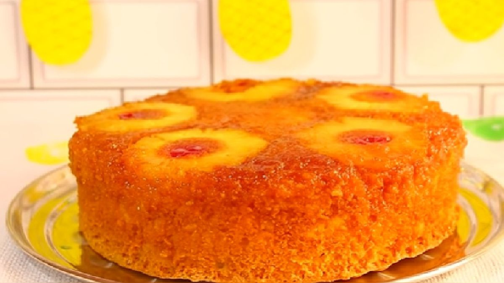

Queque de Piña

Ingredientes
- 3 tazas de harina preparada
- 1 y 1/2 tazas de azúcar
- 1/2 taza de mantequilla o margarina
- 3 huevos
- 1 taza de almíbar de piña
- 4 rodajas de piña en almíbar
- 3 cucharadas de pisco (o coñac)
Preparacion
Batir la mantequilla con el azúcar hasta que esté cremosa
agregar uno a uno los huevos
hasta que el azúcar se disuelva
fuera de la batidora con espátula de madera o goma agregar la harina (cernida) alternando con el jugo de piña y con el licor
empezando y terminando con harina mezclando bien.
Por ultimo agregar la piña picada. Enmantecar el molde vaciar la preparación
llevar a horno moderado por espacio de 45 minutos.